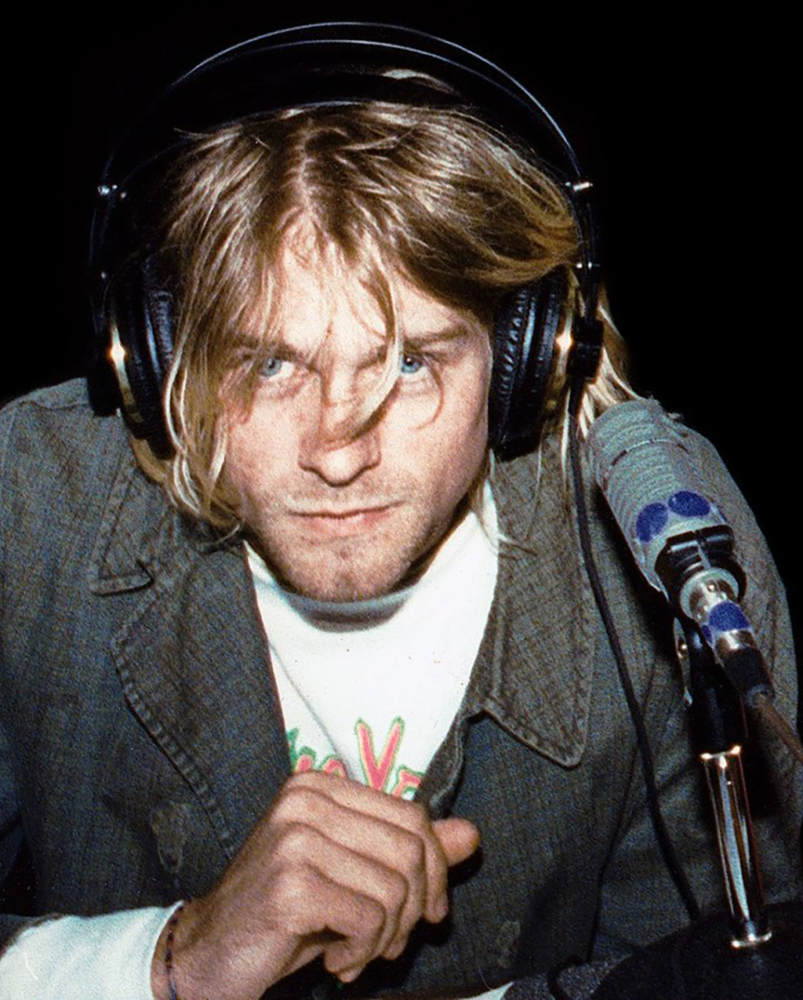

February 20, 1967 — April 5, 1994
"I'd rather be hated for who I am than loved for who I am not."
— Kurt Cobain
Kurt Donald Cobain was born on February 20, 1967, in Aberdeen, Washington — a logging town on the coast that he would later describe as one of the most violent, narrow-minded places he could imagine. His parents' divorce when he was eight devastated him. He moved between relatives, sleeping on their couches, increasingly isolated and misunderstood.
He had a natural talent for art and music. By fourteen he was playing guitar, and by the time he graduated — barely — from high school, he had already decided: he would be a rock musician, or nothing. He briefly moved under a bridge in Aberdeen when he had nowhere else to go. The famous lyric from "Something in the Way" was born from that experience.
Kurt Cobain led Nirvana to global dominance with Nevermind in 1991, an album that knocked Michael Jackson off the number-one spot and signaled the end of the hair metal era. In the process, he became the reluctant voice of Generation X — a role he loathed. The fame suffocated him. He hated being a celebrity.
He was found dead in the greenhouse of his Seattle home on April 8, 1994, three days after his death by suicide on April 5. He was twenty-seven. His suicide note, addressed to an imaginary childhood friend named "Boddah," remains one of the most raw and haunting documents in rock history. Nirvana's influence on alternative music is incalculable.
Nirvana formed in Aberdeen, Washington in 1987 with Cobain and bassist Krist Novoselic. After several drummers, Dave Grohl joined in 1990. Their debut Bleach (1989) on Sub Pop was a cult hit. When major label Geffen signed them and released Nevermind in September 1991, nothing would ever be the same. "Smells Like Teen Spirit" became an anthem for a generation that had no anthem.
In Utero (1993) was a defiant, abrasive response to the commercial expectations thrust upon them — recorded with Steve Albini to sound as raw and uncomfortable as possible. Cobain's health, mental and physical, was deteriorating throughout 1993 and early 1994. He escaped a rehab facility in Los Angeles days before his death.